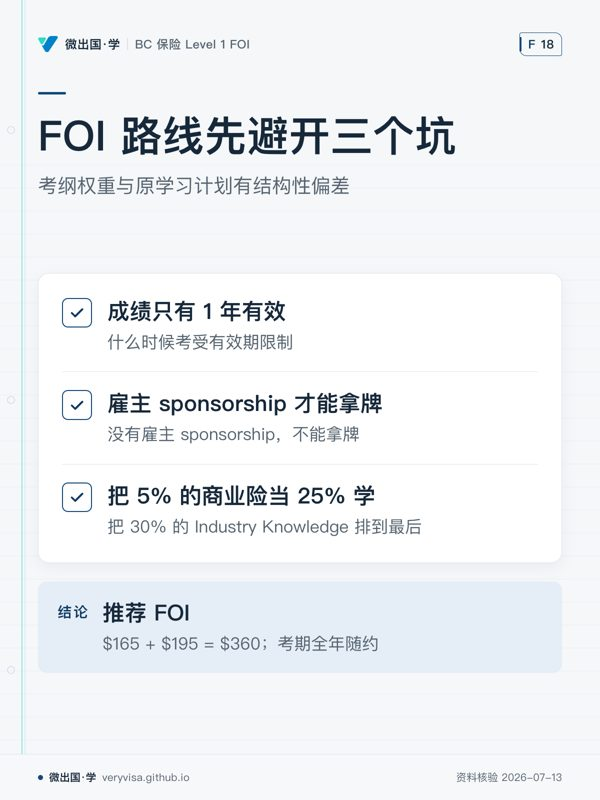

这里是项目的事实层。AI 回答任何关于考试制度、费用、考期、法定数字的问题时，先读这里，不要联网。 只有当某文件标注的【核实日期】超过 90 天、或用户明确要求刷新时，才重新联网。
引用任何数字前，先比对 memories/corrections.md（更正台账）——已推翻的结论永久禁用。
| 文件 | 内容 | 状态 | 核实日期 | 复核期限 |
|---|---|---|---|---|
01-licensing-paths-2026.md |
FOI / CAIB 1 / GIE / ILScorp 四条路径全对比 + 推荐 FOI + 行动清单 | 现行 | 2026-07-13 | 2026-10-11 |
02-exam-blueprint.md |
考纲权重 30/30/30/5/5 + 原项目的结构性偏差 + 修正后 20 周路线 | 现行 | 2026-07-13 | 2026-10-11 |
03-fees-dates-2026H2.md |
全部费用、折扣真相、2026 下半年考期与考场 | 现行 | 2026-07-13 | 2026-10-11 |
04-official-sources.md |
源分级（T0 用书 → T5 禁用）+ 已剔除的污染源 | 现行 | 2026-07-13 | 长期 |
05-fact-ledger.md |
数字台账：ICBC 限额、考试参数、已发现的数据冲突 | 现行 | 2026-07-13 | 2026-10-11（ICBC 数字每年 4/1 变） |
⚠️ agy/notes/nb02-icbc_topic1_notes.md（非 kb） |
旧笔记 | 含错误禁引用（$119,000，应为 $122,500） | — | — |
🛑 agy/notes/exam/nb02-icbc_topic1_quiz.md（非 kb） |
旧题库 | 含错误禁引用：Q2 标准答案错误（判 $119,000 为正确）。做这套题会把错答案背进错题本 | — | — |
一句话摘要（给赶时间的自己）
- 考什么：100 题单选，2–2.5 小时，70% 及格。Industry 30% / Auto 30% / Property 30% / Commercial 5% / Claims 5%。
- 走哪条路：FOI，用书 $165 + 考试 $195 = $360，考期全年随约，第二次可立即重考。
- 什么时候考：目标 2026 年 12 月前。20 周计划，模考稳定 ≥80% 才报名。
- 最大的坑：① 成绩只有 1 年有效 ② 必须有雇主 sponsorship 才能拿牌 ③ 原学习计划把 5% 的商业险当 25% 学、把 30% 的 Industry Knowledge 排到最后。
- 能拿的折扣：现在基本没有。会员价要有工作，最大的"折扣"是雇主报销——面试时问。
本页知识卡
不看正文也能拿到这一节的核心内容：先看导读，再看图。点图放大，左右翻页。
- 先看先看重新联网的触发点，核实日期不是长期有效。
- 易漏禁引用的不只旧值，旧题库的标准答案也有错误。
- 下一步去知识卡查数字台账，再到讲解确认核实日期。

- 先看先看学习计划那项，它和考纲权重有结构性偏差。
- 易漏FOI 是推荐路线，但拿牌还需要雇主 sponsorship；两件事不要混为一谈。
- 下一步去路线确认拿牌条件，再到练习按考纲权重复习。
本站依据官方原文自撰